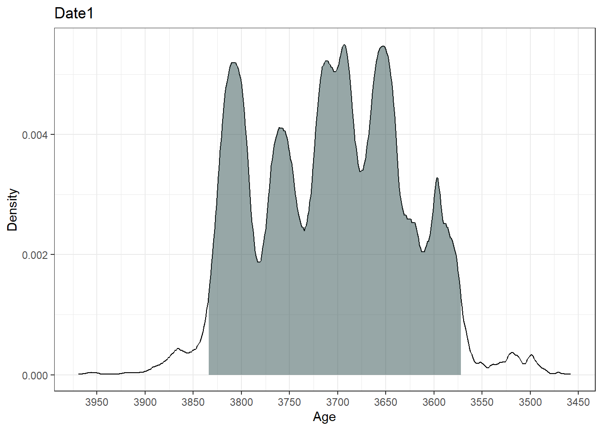
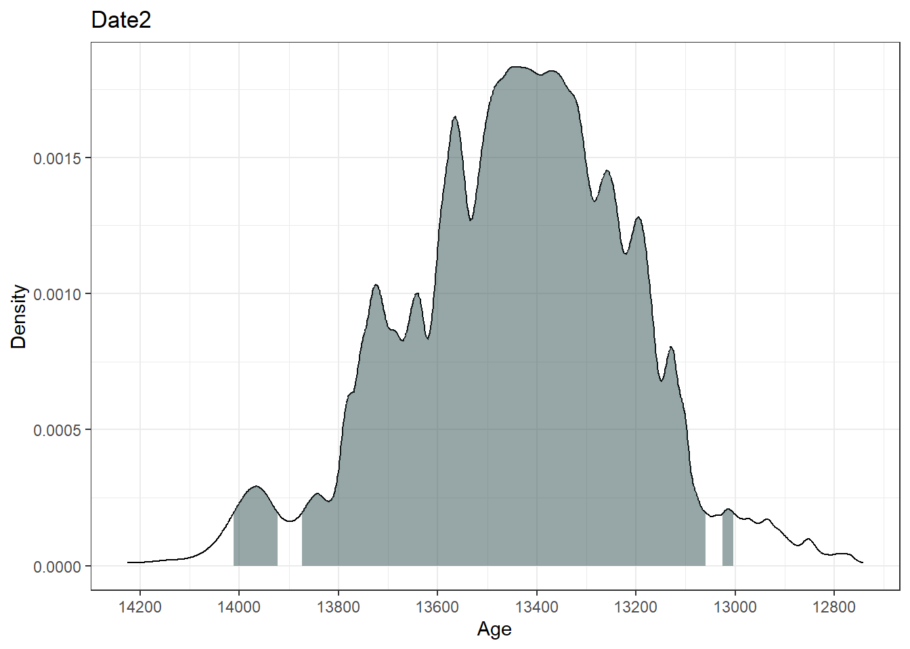
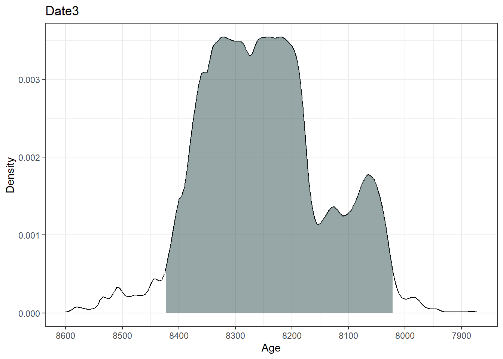
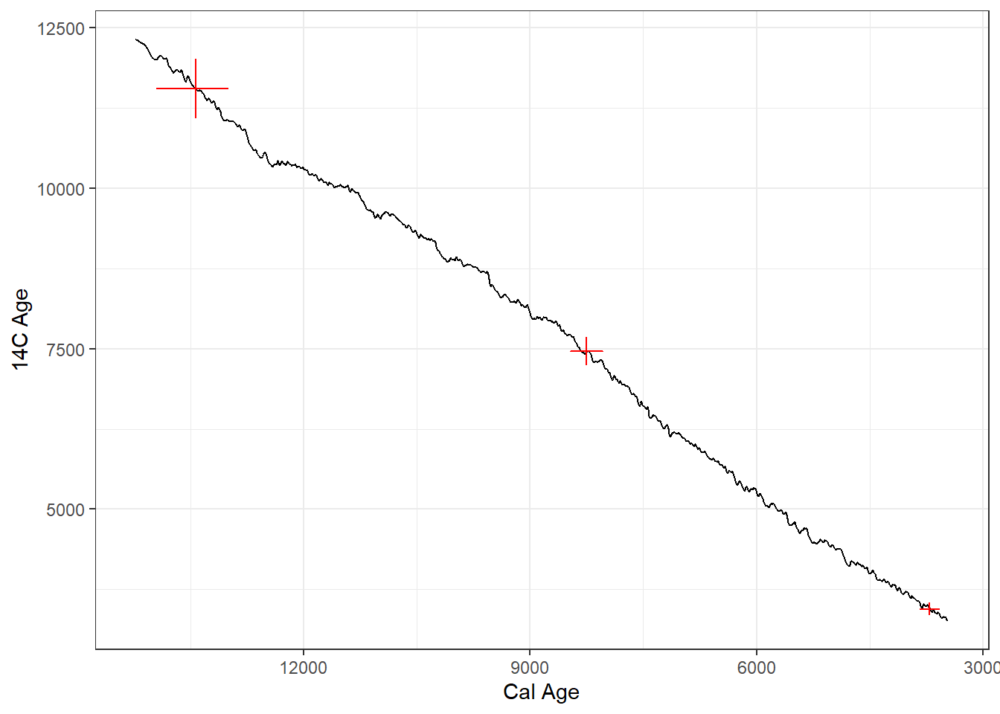
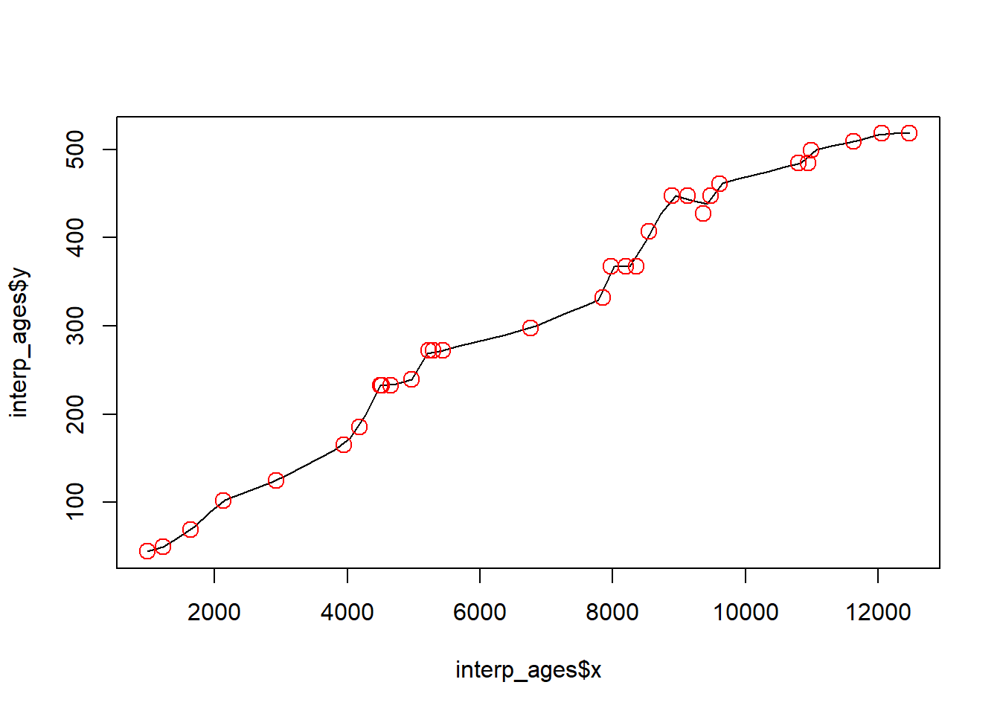
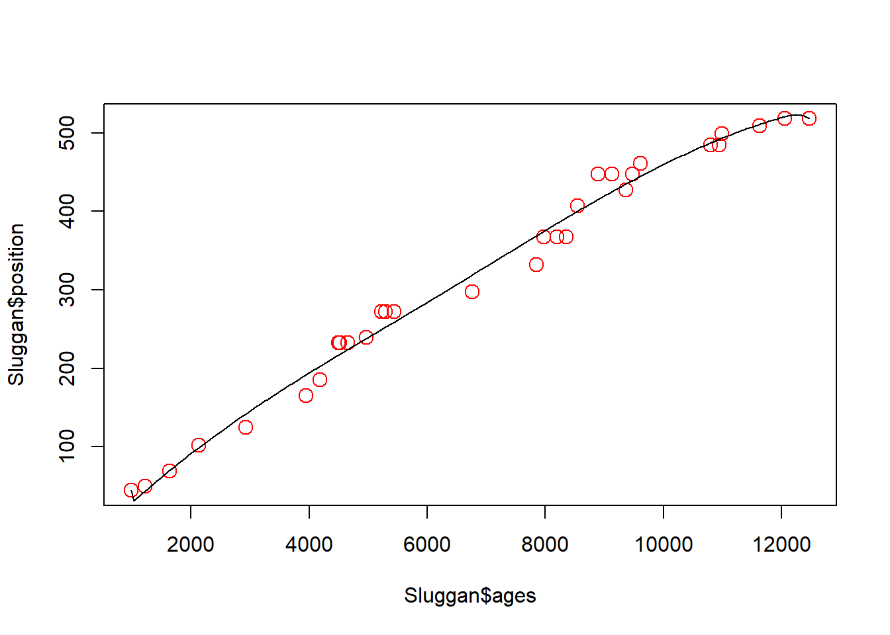
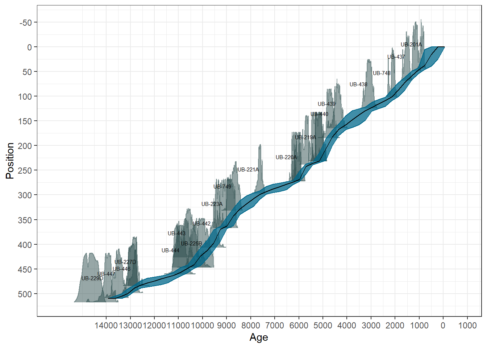

# Load up the package
if (!require("pacman")) install.packages("pacman", repos="http://cran.r-project.org")
pacman::p_load(Bchron, splines) # splines comes with BASE-R4 Age-depth modelling
4.1 Part 1: Background
A foundational difference between geology and ecology is that, for geologists, time is an unknown variable that must be estimated with uncertainty. In contrast, most ecologists can assume that the temporal coordinates of their observations are known precisely, with zero uncertainty. Fortunately, geochronologists have a wide variety of natural clocks, thanks to the constant decay rates of radioactive isotopes. Each isotope has a unique decay rate, and so each is appropriate for particular timescales.
For the last 50,000 years, radiocarbon (14C), with its half-life of 5,730 years, is by far the most common form of radiometric dating. (Beyond 10 half-lives, so much of a radioactive substance has decayed away that it becomes immeasurable.) Radiocarbon is the mainstay of Quaternary dating and archaeology.
In Quaternary paleoecology, radiocarbon dating is expensive – a single sample typically costs $300 to $500 – so usually a given lake-sediment record will have only a scattering (ca. 5 to 30) of radiocarbon dates and other age controls. Other kinds of age controls include volcanic ash layers (tephras), 210Pb (half-life: 22.6 yrs), optically stimulated luminescence (OSL) dates, historic events such as the rise in Ambrosia pollen abundances associated with EuroAmerican land clearance, etc. An age-depth model must be constructed to estimate the age of sediments not directly associated with an age control. In multi-site data syntheses, the number of age controls, their precision, and their likely accuracy are all fundamental indicators of data quality (e.g. Blois et al. 2011; Mottl et al. 2021).
To estimate ages for depths lacking radiocarbon date, an age-depth model is required. Age-depth models are fitted to the available age controls (age estimates with uncertainty for individual depths) and provide estimates of age as a function of depth, for all depths and ages within the temporal bounds of the model.
4.2 Part 2: Code
Here we will gain practice in working with age-depth models of various kind, and assessing their age estimates and uncertainty. We’ll begin with a bit of practice in calibrating radiocarbon years to calendar years and comparing the resulting age estimates from different calibration curves.
Packages required for this section
We will be using Bchron for calibration and Bayesian age-depth modelling. Notably rbacon is another commonly used package, see Trachsel and Telford (2017) for a discussion on age-depth models. We will also be fitting some interpolation and linear models using BASE-R. Remember you must have packages both installed and loaded, often loading a package is done via the library(packagename) function. The following code using the pacman package takes care of installation and loading in one go.
4.2.1 Calibration of Radiocarbon Dates
A complication in radiocarbon dating is that the initial calculation of a radiocarbon age assumes, by convention, that the amount of radiocarbon in the atmosphere is constant over time. See Bronk Ramsey (2008) for a good overview of 14C dating. This assumption is untrue, so all radiocarbon age estimates must be post-hoc calibrated using a calibration curve that is based on compiling radiocarbon dates of materials that have precise independent age estimates (e.g. tree rings, corals). The IntCal series (IntCal04, IntCal09, IntCal13, IntCal20) is the community standard for calibrating radiocarbon dates to age estimates in calendar years (e.g., Reimer et al. 2020). The conversion from radiocarbon to calendar years usually further increases the uncertainty of age estimates.
Yet another complication in radiocarbon dating is that different calibration curves need to be used for the Northern vs. Southern Hemisphere and for the atmosphere vs. oceans, due to different residence times of 14C in these different reservoirs. For example, atmospheric radiocarbon that diffuses into the surface oceans usually will reside for centuries before phytoplankton biologically fix it through photosynthesis, which will lead marine 14C to be depleted (and ‘too old’) relative to atmospheric 14C. Use the wrong calibration curve and your age estimate will be inaccurate!
4.2.1.1 Calibrating radiocarbon dates in R
Here we’ll experiment with calibrating radiocarbon dates, using various calibration curves. Radiocarbon dated samples come back from the lab with a radiocarbon age and standard deviation, among other information. These two bits of information are used to calibrate the radiocarbon dates to estimated ages. R packages may have useful vignettes (package tutorials) and built-in datasets that provide handy test templates. The following code is modified from the Bchron vignette.
ages = BchronCalibrate(ages=c(3445,11553,7456),
ageSds=c(50,230,110),
calCurves=c('intcal20','intcal20','intcal20'))summary(ages)95% Highest density regions for Date1
$`94.4%`
[1] 3572 3834
95% Highest density regions for Date2
$`0.4%`
[1] 13004 13025
$`77.9%`
[1] 13059 13874
$`16.4%`
[1] 13923 14012
95% Highest density regions for Date3
$`94.6%`
[1] 8022 8423plot(ages)[[1]]
[[2]]
[[3]]
plot(ages, includeCal = TRUE, fillCol = 'red')
The output summary indicates the range of the highest density regions (i.e., the most likely ‘real’ age range of the sample). The plot function in Bchron outputs a ggplot object of the high density regions of the most likely ages.
4.2.2 Types of Age-Depth Models
Different kinds of age-depth models exist, each with their own underlying assumptions and behavior. In the list below, #1-4 are classical or traditional forms of age-depth models, but Bayesian models are now the norm. The packages rbacon (usually referred to as ‘bacon’) and Bchron are the current standards for Bayesian age-depth modelling. Before going to bayesian models, we’ll begin with the classics.
Linear interpolation, a.k.a. ‘connect the dots,’ in which straight lines are drawn between each depth-adjacent pair of age controls.
Linear regression (\(y=b0~ + b1x\); \(y=\)time and \(x=\)depth; \(b0\) and \(b1\) are constants), in which a single straight line is fitted through the entire set of age controls. In ordinary linear regression (OLS), the chosen line will minimize the y-dimension distances of individual points to the line. Standard OLS assumes that all observations are normally distributed, which is a poor assumption for calibrated radiocarbon dates.
Polynomials, also fitted to the entire set of age controls (\(y= b0 + b1x + b2x^2 + b3x^3 + …bnx^n\)), are an extension of linear regression, with additional terms for \(x^2\), \(x^3\), etc. Some arbitrary maximum n is chosen, usually in the range of 3 to 5. These are called ‘third-order polynomials,’ ‘fifth-order polynomials,’ etc.
Splines, which are a special kind of polynomial function that are locally fitted to subsets of the age controls, and then smoothly interpolated between points. (Several different formulas can be used to generate splines; common forms include cubic, smooth, monotonic, and LOWESS).
Bayesian age models (e.g.
bacon,bchron,oxcal, etc.). Bayesian models differ in detail, but all combine a statistical representation of prior knowledge with the new data (i.e. the age controls at a site) to build an age-depth model with posterior estimates of age for any given depth. Bayesian models are now widely used because- they allow the incorporation of prior knowledge (e.g., from coring many lakes, we now have decent estimates of typical sediment accumulation rates, Goring et al. (2012));
- they can handle highly irregular probability distribution functions such as those for radiocarbon dates after calibration; and as a result
- they generally do a better job of describing uncertainty than traditional age-depth models.
4.2.2.1 Classical age-depth models
Classical models are now out-dated methods (Blaauw et al. 2018), but it is useful to understand how they work as literature before the relatively recent development of Bayesian methods has relied on them. Let’s explore some classical methods of age-depth modelling using one of the datasets included with the Bchron package. The data are from a core in Northern Ireland; Sluggan Bog Smith and Goddard (1991), and can be called via:
data(Sluggan) # Call the data from Bchron
print(Sluggan) # Check out the dataLinear interpolation predicts ages by simply, drawing a line between successive dated samples. This method assumes that there is a constant age-depth relationship between samples. An assumption that is unlikely to be true, especially of cores with fewer dated samples than Sluggan Moss.
interp_ages <- approx(x = Sluggan$ages, y = Sluggan$position) # use the function approx() to interpolate between ages
plot(x = interp_ages$x, y = interp_ages$y, type = 'l') # Plot the interpolated data
points(x = Sluggan$ages, y = Sluggan$position, cex = 1.5, col = 'red') # overlay the original age points
Linear regression provides a line of best fit through the dated samples. This method assumes a constant age-depth relationship across all samples, also unlikely to be true depending on processes affecting the core during its formation.
mod_ages <- lm(Sluggan$position ~ Sluggan$ages) # Create a linear regression model
plot(x = Sluggan$ages, y = Sluggan$position, cex = 1.5, col = 'red') # Plot the original ages
abline(mod_ages) # add the regression line from the regression modelPolynomial regression allows a curve to be fit through the data. The amount the curve ‘wiggles’ depends on the order of the polynomial fit to the data. Polynomial regression has the risk of being over-fit.
x <- Sluggan$ages # Renaming the variables because the predict function below is fussy about the input name
y <- Sluggan$position
poly_ages <- lm(y ~ poly(x, 3))
plot(x = Sluggan$ages, y = Sluggan$position, cex = 1.5, col = 'red')
age_range <- seq(from = range(Sluggan$ages)[1], to = range(Sluggan$ages)[2], length.out = 250)
lines(age_range, predict(poly_ages, data.frame(x = age_range)))Splines are a class of functions including, for example, smoothing splines or cubic splines. Cubic splines are pieve-wise polynomials locally between ‘knots’. That is the data are split into bins that are fit independently using. By default, the bs() function uses a third degree polynomial. Without providing knots the fit will look the same as a third degree polynomial regression.
cubic_ages <- lm(y ~ bs(x, knots = c(1000, 6000, 12000)))
plot(x = Sluggan$ages, y = Sluggan$position, cex = 1.5, col = 'red')
lines(age_range, predict(cubic_ages, data.frame(x = age_range)))
Because classical age-depth modelling is rarely used now we are not going to delve further into the statistical details of the best way of fitting each model (e.g., the number of knots to use for fitting a cubic spline).
One of the issues with classical age-depth modelling is that uncertainty decreases with fewer datapoints.
4.2.2.2 Bayesian age-depth models
Now let’s see what the latest methods show for the same dataset.
Note that all the values provided to the arguments are contained in the Sluggan dataframe. When creating chronologies from your own (or accessed data), you may need to rename them to match your data.
SlugganOut = with(Sluggan,
Bchronology(ages=ages,
ageSds=ageSds,
calCurves=calCurves,
positions=position,
positionThicknesses=thickness,
ids=id,
predictPositions=seq(0,518, by=10)))The summary shows for each position (depth) the median and quartiles of the predicted ages for that position.
summary(SlugganOut)Quantiles of predicted ages by depth:
Depth 2.5% 25% 50% 75% 97.5%
0 -56.050 75.00 232.5 410.25 697.075
10 28.000 234.75 389.5 540.50 786.075
20 133.000 378.50 523.0 653.00 830.050
30 268.925 540.75 654.0 755.00 881.025
40 513.950 718.00 794.0 852.00 927.050
50 959.975 1067.75 1130.0 1198.00 1328.000
60 1140.925 1268.75 1332.0 1397.25 1535.000
70 1388.975 1494.00 1552.5 1613.00 1753.075
80 1500.950 1650.75 1740.0 1839.25 2024.100
90 1622.975 1809.75 1909.5 1999.25 2165.050
100 1846.000 2017.75 2077.0 2162.25 2275.000
110 2167.975 2353.75 2477.0 2622.75 2903.025
120 2407.000 2712.75 2841.0 2946.00 3115.100
130 2977.825 3150.75 3252.0 3390.00 3770.100
140 3118.000 3371.75 3531.0 3721.25 4074.075
150 3310.950 3664.00 3830.0 3996.00 4250.025
160 3637.875 3990.00 4127.5 4222.00 4408.075
170 4207.975 4342.75 4420.0 4494.25 4632.325
180 4343.950 4494.00 4565.0 4639.00 4753.050
190 4539.000 4663.00 4736.0 4809.25 4935.050
200 4611.850 4756.00 4830.0 4900.00 5052.075
210 4697.950 4843.75 4914.0 4987.00 5120.025
220 4788.850 4926.00 4997.5 5060.00 5194.000
230 4917.000 5040.75 5095.0 5156.00 5278.000
240 5518.975 5637.00 5678.5 5722.00 5849.000
250 5635.950 5737.75 5790.5 5848.25 5961.025
260 5712.975 5829.00 5888.5 5940.00 6054.000
270 5841.925 5949.00 5994.0 6041.25 6127.000
280 6292.950 6481.75 6628.0 6813.50 7237.025
290 6568.625 6972.00 7147.0 7302.50 7523.125
300 7500.875 7616.75 7686.0 7780.25 8061.075
310 7635.900 7809.75 7945.0 8107.00 8427.175
320 7795.950 8070.00 8215.0 8348.25 8611.025
330 8106.925 8390.00 8473.0 8572.00 8785.000
340 8485.950 8597.00 8677.0 8768.25 8960.150
350 8558.975 8694.00 8792.0 8872.00 9047.225
360 8623.950 8794.00 8899.0 8985.00 9130.000
370 9053.000 9214.00 9284.0 9360.25 9487.025
380 9149.000 9312.00 9386.5 9470.00 9637.050
390 9226.975 9389.75 9470.5 9556.25 9778.075
400 9324.975 9471.00 9552.0 9651.00 9882.250
410 9495.975 9650.75 9748.0 9872.00 10131.025
420 9639.950 9844.00 9984.0 10115.25 10287.025
430 9834.925 10081.75 10262.5 10323.00 10464.050
440 9959.725 10198.00 10315.0 10387.00 10546.275
450 10438.000 10580.00 10675.0 10777.25 11049.050
460 10690.975 10896.00 11021.0 11112.50 11267.050
470 11150.950 11520.00 11722.0 11964.25 12408.075
480 11636.925 12178.75 12391.5 12541.25 12702.050
490 12753.925 12864.00 12921.5 12978.00 13101.025
500 12912.000 13052.00 13112.0 13183.00 13380.025
510 13340.975 13500.75 13598.5 13703.25 13892.000plot(SlugganOut)
A more complete version of the modelling process using Bchron can be found in the vignette.
Resources
Age-depth modelling is complicated, there are many pitfalls, assumptions, and uncertainties that are often ignored. Recent developments have begun to focus on quantifying uncertainties to understand the reliability of inferences made from the data. Ket papers for understanding age depth modelling include:
4.3 Part 3: Exercises
You may want to refer to the bchron vignette to find some helpful information for the exercises below.
4.3.1 Calibration
- Using the existing example code, change the
calCurvesinput to:- the Southern Hemisphere calibration curve
- the marine sediments curve.
- Calibrate a different set of three ages by modifying the inputs to
agesandageSds.
The object you assigned the result of BchronCalibrate to contains all the calibration information and can be accessed with the $ e.g., ages$Date1$ageGrid
- Using one of your calibrated sets of three dates, calculate the median age from the
ageGridand the difference of each calibrated age to the original uncalibrated age.
Median and mean ages
Commonly, only the median age is reported; however, it is good practice to report and consider the range of possible ages, especially when exploring synchroneity of events across space. Notice how Bchron focuses on delivering ranges and densities.
4.3.2 Classical age-depth modelling:
Bchronhas a second built-in dataset named Glendalough. Using the Glendalough dataset:- Fit a linear interpolation, linear regression, three different order polynomials and a cubic spline
- Plot the results
- Did you run into any errors or warnings? If so, why?
4.3.3 Bayesian age-depth modelling
- Run the
Bchronage-depth model on the Glendalough dataset and consider:- How does uncertainty change between the plot outputs between the Glendalough (a dataset with fewer radiocarbon dates) and Sluggan Moss (a data-rich site)
- Run the summary funcion on the Glendalough model, does the output reflect the plot? Is there smaller uncertainty around samples? Why is interpreting results in the context of the uncertainty important?
4.4 Learning outcomes (Rephrase/exclude)
Learn how to access and use-built in datasets
Learn how to find package vignettes